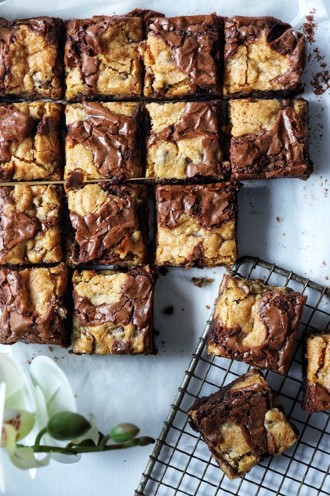

Brookies by preppy kitchen
adapted by pk

Description
Originally made by Preppy Kitchen, but I found it a bit too sweet,
so I adjusted the sweetness according to my taste :)
Ingredients
Brownie batter
- 113 g melted, unsalted butter
- 75 g granulated sugar
- 75 g light brown sugar
- 35 g cocoa powder
- 5 ml vanilla extract
- 1/2 tsp salt
- 2 eggs
- 65 g all-purpose flour
- 3/5 cup chocolate chips
Cookie dough
- 113 g room temperature, unsalted butter
- 75 g granulated sugar
- 38 g brown sugar
- 5 ml vanilla extract
- 1 egg
- 1/2 tsp salt
- 1/2 tsp baking soda
- 1/2 tsp baking powder
- 160 g all-purpose flour
- 1 cup chocolate chips
Steps
- Line a 9x13 baking dish with parchment or foil and heat oven to 350F.
- For the brownies melt butter then stir in cocoa powder. Whisk in both sugar and the salt then add the eggs and vanilla and beat well (secret to glossy brownies is to beat the eggs and sugar very well.)
- Add the flour and mix until almost combined then fold in the chocolate chips and finish the batter off by hand with a spatula scraping the bowl down and mixing in any errant flour etc.
- Transfer the brownie batter to your prepared pan and spread into a thin layer then set aside.
- For the cookie dough, cream the butter, and sugars on high for 3-4 minutes or until light and fluffy, scraping the bowl down as needed.
- Mix in the vanilla and egg and scrape the bowl down once more.
- Add salt baking soda and powder then mix until combined.
- Pour in the flour and mix until almost combined then fold in the chocolate chips, reserving a handful to sprinkle on top later. Finish mixing the batter with your spatula then drop spoonfuls onto the brownie batter. You don't need full coverage, it will be nice to see the brownie batter peaking through after baking.
- Cover with foil and bake at 350F for 20 min then bake another 20 min uncovered. Allow to cool before removing from pan and cutting.
Back to Home